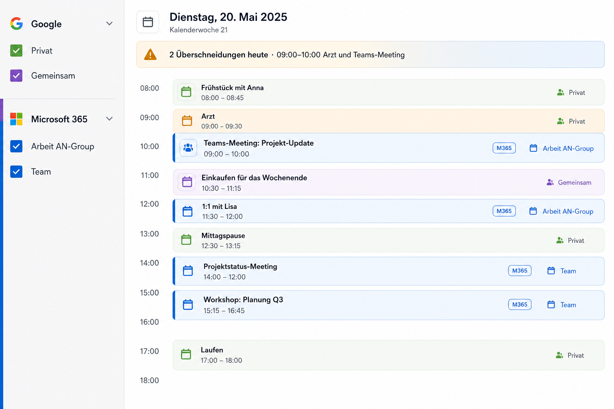
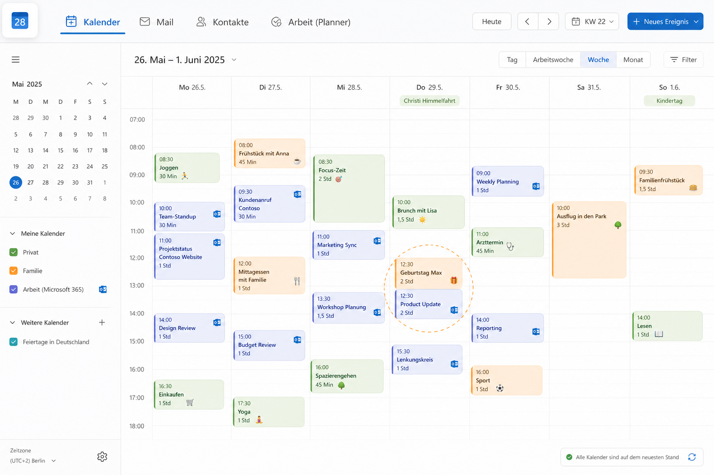
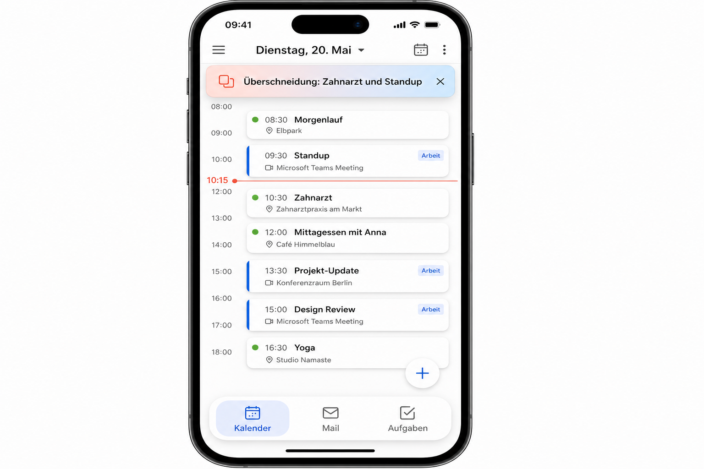
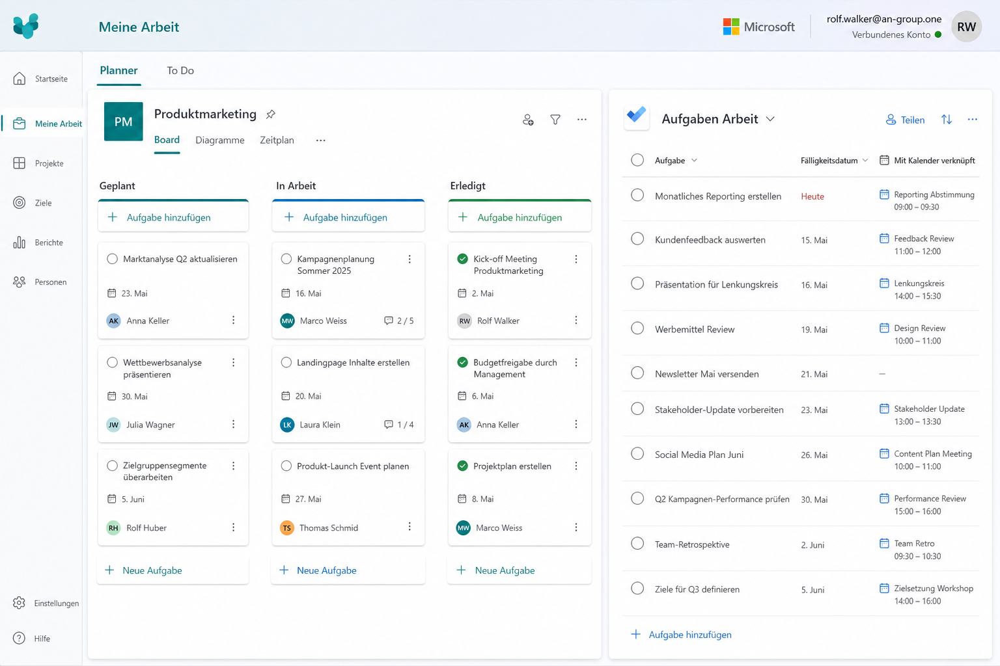
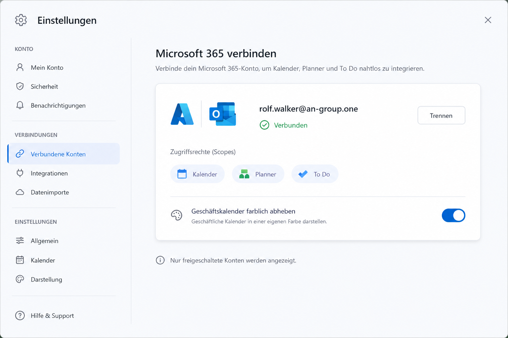

Google bleibt privat. M365 (Kalender, Planner, To Do) für
rolf.walker@an-group.one — erweiterbar per Allowlist. Geschäftstermine
optisch getrennt; Überschneidungen oben in der Tagesansicht.
UI-Mockups

A · Sidebar + TagGoogle / M365 getrennt · Überschneidungsbanner

B · WocheM365-Chips mit blauem Akzentstreifen

C · Mobile / PWAOverlap-Hinweis sticky · Karten mit Quelle

D · Planner + To DoBoard links, Aufgaben rechts

E · VerbindenEinstellungen · Scopes · Allowlist-Konto
Darstellung Geschäftskalender
Farbe: Outlook-Blau (#0078D4) als linker Streifen / Chip-Rand — Google bleibt bunt/warm.
Quelle: kleines Pill „M365“ oder Windows-Quadrat, Tooltip mit Konto.
Sidebar: zwei Blöcke „Google“ und „Microsoft 365“, getrennt wählbar.
Overlap: oberhalb der Tageszeitleiste Banner mit Anzahl + kurzer Liste der Paare; Tippen scrollt zum Konflikt.
Aktionen: wie Google — öffnen, verschieben (Drag), löschen (mit Bestätigung), Duplizieren wo Graph es zulässt.
Responsive: Desktop Sidebar+Grid; PWA sticky Banner + Dock; Tablet wie Desktop mit schmalerer Sidebar.